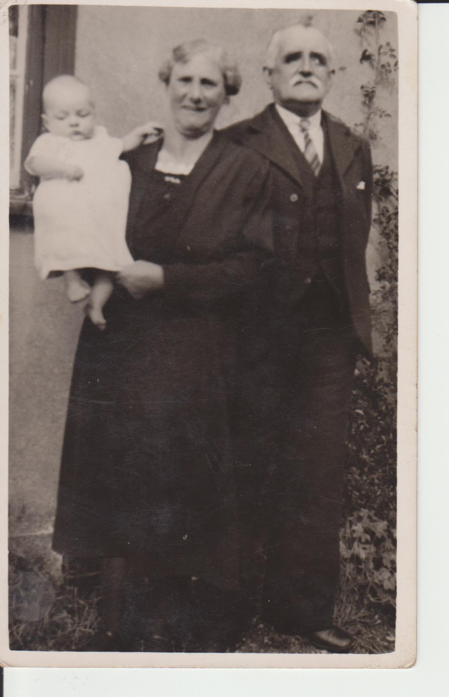

JAMES BRYCE
Born:29-JAN-1882
in Greenend, Old Monkland
Died:10-NOV-1951
3/9 Muiryhall Street Coatbridge
Address : 5 Deeds Street, Coatdyke, Airdrie
Occ: Fence Work Labourer/Steel Tube Worker
Note: Blinded in industrial accident
Address:13 Deeds Street(in 1928)
Married:10-JUN-1904 in Airdrie
CRISTINA COOKMAN BROWN
Born:18-APR-1881
14 Mairil(?) Court, Airdrie.
Died:10-AUG-1955
Children:
William Bryce(c1904)
Robert Brown Bryce(c1906)
Janet (c1908)
James Bryce(1910)
Others Unknown
[ Home ]
1911 census
24D SouthBurn Road, Coatdyke, Airdrie,Scotland
James Bryce Head Mar 30 B:Coatbridge. Puddler at Iron Works
Christina Wife Mar 30 B:Airdrie
William Son Sin 7 B:Coatbridge. School
Robert Brown Son Sin 5 B:Coatbridge. School
Janet Dau Sin 3 B:Coatbridge.
James Son Sin 1 B:Airdrie.